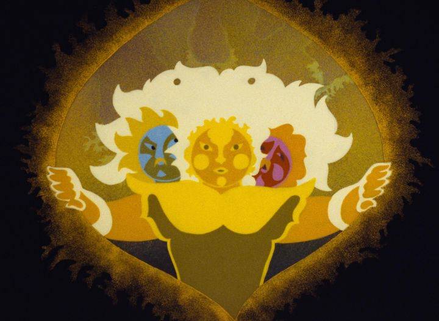

It was a Sunday night. I was tired, but not quite tired yet to sleep. I pondered what exactly to do, whether to work on a hobby, or to forcibly rest for work in the on-coming Monday. Or perhaps to attempt a wooden puzzle with over 300 solutions I had just purchased. In was in this state that I decdied to sit down with a recently-purchased Bluray copy of "Son of the White Mare," a 1981 experimental animated feature-length film (also known by the original-language title of "Feherlofia"). With a cup of lukewarm green tea, I watched. After finishing around 1am, I immediately began penning this review, with late-night snacks of cereal with milk, and a peanut-butter-and-jam sandwich.This mention might seem irrelevant, but I believe a person's state of mind and timing when watching a film matters a lot with the experience they take from it. "Son of the White Mare" is a cross between movies like "Yellow Submarine," "Belladonna of Sadness," and Disney's "Fantasia," an experimental epic of a fairy tale with visuals best witnessed under the influence of some recreational mind-altering substance. I don't partake of those, but the way I got around to the movie was probably the closest to this state as I would ever get. Based on Hungarian folk tales that I had ever heard, it's an interesting experience to witness the film new as an adult. It starts with a white Mare running through the forest, escaping from unseen captors. It escapes successfully, and gives birth to a baby horse... or human... or horse that can magically shape-shift into a human? As the baby grows, the Mare tells the child a story of a King, his three sons, and how their new wives opened forbidden doors, unleashing monsters from Hell across the land, including three evil dragons that took the wives hostage. The boy immediately wishes to go out to defeat the dragons, but naturally is unable to, being barely a year old: through a vision from an apparation, he agrees to nurse from his mother for seven years, and then seven years more, until he has matured and gained strength. The Mare lovingly does so, until she is weak and old, finally dying just as the son becomes strong enough to shake the great tree from which they hid underneath. (The film was made while Hungary was still part of the Soviet Union, and parts of its influence can be seen in the depiction sharing of resources, sacrificing for the good of others, and the non-traditional designs of the dragons in the final act). The son, dubbed "Treeshaker," leaves home in search of the gates to the Underworld, where the dragons have taken the three wives. Along the way, he comes across his two brothers, also both born from the Mare: "Stonecrumbler" and "Irontemperer." The three each have demigod-like strength, able to move mountains and shake the earth. Eventually, they find their way to the Underworld, and challenge each of the three dragons: a stone monster with three heads, a army-tank monster with seven heads, and a monolith of buildings making up twelve heads. It becomes clear that the three heroes are reincarnations of the three princes killed in the old story, and are fullfilling destiny to reclaim their lost loves.In the end, Treeshaker is the sole hero of the story. His brothers do have a purpose, but are largely regulated to the same role as two of "The Three Little Pigs." Treeshaker is stronger, wiser and braver than the others, ultimately facing the dragons alone. The other two are simply there to fail twice, as fairy tales always rely of 3's. It's a minor annoyance that they didn't play a more meaningful role. "White Mare" is also subtly sexual, in ways that might have been intentional or unintentional. The three brothers wear sheer loincloths, with little hiding their firm buttocks, and sometimes posing to highlight their fit physique. In one scene, they spank each other as punishment when one acts foolishly. In a later scene, each of the three princesses are shown to have very different personalities: one of them is rather sour, but initially flirts with her bare chest on display, suggestively stroking the hero's sword. Homo and hetero-eroticism will excite adult audiences, but it's all subtle enough that I think children would completely miss it, and as such, I think the movie is appropriate for familes, even if young children might be confused a little by the story. Visually, the film is experimental with shape and colors and movement. There were even a few moments when I wasn't quite sure what I was looking at. All the same, nearly every frame is beautiful and worthy not just for framing, but for sowing onto a quilt or painting on the side of pottery. There is symbolism in its visuals and storytelling that could merit many essays. Beyond all that, the movie plays out its fable well. It's always hard to judge a story that isn't as complex or balanced or well-paced as modern stories, when this older tale will remain timeless and likely hold up better decades into the future. However one might grade it, it's undeniably a classic of Hungarian cinema."Son of the White Mare" was formally restored in 4K, and given a release in the US some decades later in 2020 (apparently for the first time), after a North American premiere in 2019. The COVID pandemic prevented the original theatrical plans in 2020, so it was released digitally, and then on Bluray in 2021. Arbelos Distribution gave it a release that would make the Criterion Collection jealous: it comes with a booklet of multiple essays on the movie, and in its bonus features includes a 2nd full-length animated film in "Johnny Corncob" (or "Janos Vitez'), as well as 3 short films, and two interviews with the filmmaker Marcell Jankovics, one newly shot. It's a great collection to the animator's early career. Jankovics passed away of old age just weeks before the physical collection was released in the US."Johhny Corncob" (1973) was his first feature-length film, and is almost worth a dedicated review on its own. Based on a poem, it's a bit less experimental than "Son of the White Mare," and therefore might be easier to watch for general audiences and children. It still tells its story much like a timeless folk tale, and takes obvious inspiration from "Yellow Submarine" in some of its character designs. Aside from being a little more straight-forward, it's roughly on par with "White Mare" in terms of importance to be watched. After watching both films, I'm very curious to see Marcell's newer films, "Song of the Miraculous Hind" (2002), and "The Tragedy of Man" (2011), both of which are unavailable in the US at the time of this writing (on home video, that is). I'm not certain what the average film fan would think of "Son of the White Mare." Historians however will see this as nothing less than a treasure, and mandatory viewing. I think it's a worthwhile and one-of-a-kind experiment to witness. It's also a great way to discover the animator Marcell Jankovics, to begin appreciating his career, and the films that outlive him.
- "Ani" More reviews can be found at : https://2danicritic.github.io/ Previous review: review_So_I_Can't_Play_H! Next review: review_Song_of_the_Sea